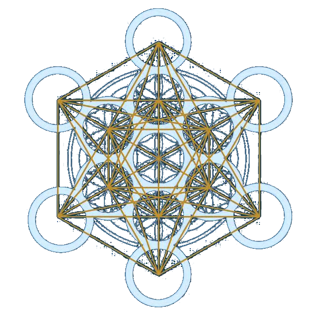

class: center, middle name:opening ## NeuroStorm <br> .center[ questions: [jovo@jhu.edu](mailto:jovo at jhu dot edu) <br> slides: <http://brainx.io/neurostorm> ] --- #### A Short History: Global Brain Workshop - brainx-1: proposed 3 projects & 1 common resource ([arxiv](https://arxiv.org/abs/1608.06548)) - what makes our brains unique? - how does the brain solve complex problems? - how can we augment clinical decision making with data - neurostorm ([neuron](http://dx.doi.org/10.1016/j.neuron.2016.10.033), top 5% altmetric) -- - Lots of press (much to my surprise) - [MIT Technology Review](https://www.technologyreview.com/s/602274/three-grand-challenges-for-brain-science-that-can-be-solved-in-10-years/) - [Science](http://science.sciencemag.org/content/352/6283/277) & [Nature](http://www.nature.com/news/worldwide-brain-mapping-project-sparks-excitement-and-concern-1.20658) - [State Department announces "The International Brain Station"](https://2009-2017.state.gov/r/pa/prs/ps/2016/09/262200.htm) --- ### Where are we now? <img src="images/lion.JPG" STYLE="position:absolute; HEIGHT=500px;"/> --- ## Science in the Cloud 1. Globally democratizes science 2. Accelerates discovery <img src="images/world.gif" STYLE="position:absolute; TOP:300px; LEFT:0px; WIDTH:910px;"/> --- ### Where are we now? - International Brain Lab - NeuroNex Innovation Awards - New companies - I lost greg :( - here. now. --- ### Goals for Next 24 Hours - **Accelerate Brain Science Discovery in the Cloud** - Appreciate the progress our community has made so far - Learn about on-going (funded) related work - Make plans for immediate next steps to *coordinate* efforts --- ## Tonight - this overview - 1 min schpiel's from everybody in room - discuss group foci for tomorrow over desserts - potential sessions are: data, infrastructure, explore, model --- ## Tomorrow Morning - 08:00 breakfast - 08:45 welcome and break into groups - 09:00 break-out sesssion #1 - 10:20 demo's and 30 min break - 10:50 break-out session #2 - 12:15 lunch - 13:15 summary of morning results (5 min per group) --- ## Tomorrow Afternoon - 13:45 break-out sesssion #3 - 15:10 demo's and 30 min break - 15:40 break-out session #4 - 17:00 wine and refreshments - 18:00 summary of afternoon results (5 min per group) - 18:30 wrap up - 18:45 celebratory working dinner --- ### Logistics - *Moderators*: ~uniform distribution of time per person - *Rapporteurs*: taking notes - *M+R*: presenting at lunch and dinner - Regular participants: - encouraged to attend 2 different morning sessions - and 1 new afternoon session - *Funders*: do whatever you want :) - *Next Gen Leaders*: injenct postive energy & youthful spirit! --- ## Demo's - Storage & Viz in da Cloud - [A dentrite meshed using marching cubes](https://viz-dev.boss.neurodata.io/#!{'layers':{'em':{'type':'image'_'source':'boss://https://api.boss.neurodata.io/kharris15/apical/em'}_'meshes':{'type':'segmentation'_'source':'boss://https://api.boss.neurodata.io/kharris15/apical/anno?meshurl=https://s3.amazonaws.com&meshpath=meshes.boss.neurodata/harris15/apical'_'segments':['113']}_'smooth':{'type':'segmentation'_'source':'boss://https://api.boss.neurodata.io/kharris15/apical/anno?meshurl=https://s3.amazonaws.com&meshpath=meshes.boss.neurodata/harris15/apical_smooth'_'segments':['113']_'visible':false}}_'navigation':{'pose':{'position':{'voxelSize':[2_2_50]_'voxelCoordinates':[4107.341796875_4073.96826171875_97.36589813232422]}}_'zoomFactor':8}_'perspectiveOrientation':[-0.32683029770851135_0.8050894737243652_-0.3860739767551422_0.3097737729549408]_'perspectiveZoom':203.750147310818_'layout':'xy-3d'}) - [Same thing but smoothed](https://viz-dev.boss.neurodata.io/#!{'layers':{'em':{'type':'image'_'source':'boss://https://api.boss.neurodata.io/kharris15/apical/em'}_'meshes':{'type':'segmentation'_'source':'boss://https://api.boss.neurodata.io/kharris15/apical/anno?meshurl=https://s3.amazonaws.com&meshpath=meshes.boss.neurodata/harris15/apical'_'segments':['151'_'113'_'129']_'visible':false}_'smooth':{'type':'segmentation'_'source':'boss://https://api.boss.neurodata.io/kharris15/apical/anno?meshurl=https://s3.amazonaws.com&meshpath=meshes.boss.neurodata/harris15/apical_smooth'_'segments':['113']}}_'navigation':{'pose':{'position':{'voxelSize':[2_2_50]_'voxelCoordinates':[4107.341796875_4073.96826171875_97.36589813232422]}}_'zoomFactor':8}_'perspectiveOrientation':[-0.755286455154419_0.5536582469940186_0.11311593651771545_0.33196958899497986]_'perspectiveZoom':203.750147310818_'layout':'xy-3d'}) - [Orthogonal views of some neurons](https://viz-dev.boss.neurodata.io/#!{'layers':{'em':{'type':'image'_'source':'boss://https://api.boss.neurodata.io/kharris15/apical/em'}_'meshes':{'type':'segmentation'_'source':'boss://https://api.boss.neurodata.io/kharris15/apical/anno?meshurl=https://s3.amazonaws.com&meshpath=meshes.boss.neurodata/harris15/apical'_'segments':['169'_'129'_'214'_'250']}_'smooth':{'type':'segmentation'_'source':'boss://https://api.boss.neurodata.io/kharris15/apical/anno?meshurl=https://s3.amazonaws.com&meshpath=meshes.boss.neurodata/harris15/apical_smooth'_'segments':['113']_'visible':false}}_'navigation':{'pose':{'position':{'voxelSize':[2_2_50]_'voxelCoordinates':[4204.427734375_4105.89794921875_134.603759765625]}}_'zoomFactor':8}_'perspectiveOrientation':[-0.2354082614183426_0.4365214705467224_-0.6046097278594971_-0.6232808232307434]_'perspectiveZoom':89.07372238668175_'layout':'4panel'}) - [Reconstruction near a synapse](https://viz-dev.boss.neurodata.io/#!{'layers':{'em':{'type':'image'_'source':'boss://https://api.boss.neurodata.io/kharris15/apical/em'}_'meshes':{'type':'segmentation'_'source':'boss://https://api.boss.neurodata.io/kharris15/apical/anno?meshurl=https://s3.amazonaws.com&meshpath=meshes.boss.neurodata/harris15/apical'_'segments':['193'_'105']}_'smooth':{'type':'segmentation'_'source':'boss://https://api.boss.neurodata.io/kharris15/apical/anno?meshurl=https://s3.amazonaws.com&meshpath=meshes.boss.neurodata/harris15/apical_smooth'_'visible':false}}_'navigation':{'pose':{'position':{'voxelSize':[2_2_50]_'voxelCoordinates':[4124.359375_3857.3212890625_118.16165161132812]}}_'zoomFactor':7.470331534224511}_'perspectiveOrientation':[-0.13435348868370056_-0.017281968146562576_0.9906467199325562_-0.016351474449038506]_'perspectiveZoom':65.16015519693725_'layout':'xy-3d'}) - usr/pword: neurodemo/neurostorm - all data from [Harris et al. 2015](https://neurodata.io/data/kharris15) - Scalabel Machine Learning in da Cloud - password 123456 - [k-means NUMA optimized routines](http://awesomer.cs.jhu.edu:8888/notebooks/Jupyter%20Notebook/knor/knorR.ipynb) - [Demo for GMM, LOL and spectral embedding accelerated by FlashX](http://awesomer.cs.jhu.edu:8888/notebooks/Jupyter%20Notebook/brainx2-FlashX-demo.ipynb) - [GMM and spectral embedding in R](http://awesomer.cs.jhu.edu:8888/notebooks/Jupyter%20Notebook/brainx2-R-demo.ipynb) - [sic/ndmg](http://cortex.jhu.edu/notebooks/sic_ndmg.ipynb) - [fngs](http://cortex.jhu.edu:8062/notebooks/sic_fngs.ipynb) --- ## And Beyond - Hackathon & Data Science Room at OHBM - Hackathon at MBL in October - NeuroData booth & hackathon at SfN --- ### Deliverables from this workshop - white paper (possibly with NCBM & [NeuroComp17](https://conferences.discovery.wisc.edu/neurocomp17/)) - it will list, for each participant, achievement & link to resource - for example, at ODEN, i committed greg to write a draft of the SIC paper (published [here](https://doi.org/10.1093/gigascience/gix013) within 100 days) - hackathon at MBL will demo functionality and build on success - white paper on arxiv by SfN --- ## Acknowledgments | Role | People | | :--- | :--- | | Staff | Sara, Kim, Heather, Erika | | Moderators | randal, kristen, fritz, tyler | | Rapporteurs | Alex, Chris, Bobby, Adam, Greg | | Demos | Eric P, Da, Eric B, Greg | | Funding | NSF, KNDI, CIS | <img src="images/funding/nsf_fpo.png" STYLE="position:absolute; TOP:550px; LEFT:10px; HEIGHT:100px;"/> <img src="images/funding/nih_fpo.png" STYLE="position:absolute; TOP:550px; LEFT:120px; HEIGHT:100px;"/> <img src="images/funding/darpa_fpo.png" STYLE="position:absolute; TOP:550px; LEFT:230px; HEIGHT:100px;"/> <img src="images/funding/iarpa_fpo.jpg" STYLE="position:absolute; TOP:550px; LEFT:430px; HEIGHT:100px;"/>  <img src="images/funding/kndi_fpo.png" STYLE="position:absolute; TOP:550px; LEFT:650px; HEIGHT:100px;"/> --- class: middle, center # Questions? <!-- ### Funding --> <!-- <br /> --> <!-- <br> <br> --> ### Hiring Postdocs & Software Engineers Now! e: [jovo@jhu.edu](mailto:jovo@jhu.edu) w: [neurodata.io](http://neurodata.io) <!-- ____ --> <!-- [more slides](http://docs.neurodata.io/ndintro/more.html) -->